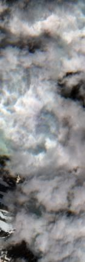

Go to: Abramov (KG) · Barkrak (UZ) · Batysh Sook (KG) · GGP (TJ) · Glacier #354 (KG) · Glacier #457 (TJ) · Glacier #599 (KG) · Golubin (KG) · Gorbunov Station (TJ) · Grigoriev (KG) · Kara-Batkak (KG) · Kon-Chukurbashi (TJ) · Kyzylsu (TJ) · Sangvor (TJ) · Sary-Tor (KG) · Turgen Ak-Suu (KG) · Tuyuksu (KZ) · Yakarcha (TJ) · Zulmart (TJ)